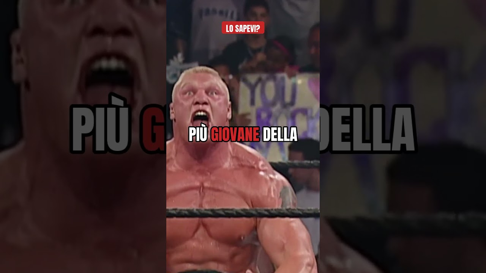

I campioni WWE più giovani: il record di Brock Lesnar a 25 anni
A SummerSlam 2002 Brock Lesnar batte The Rock e diventa a 25 anni il campione WWE più giovane di sempre. Chi aveva il record prima di lui, e perché Randy Orton non lo ha battuto.
Brock Lesnar è diventato campione WWE a 25 anni. Nessuno c'era riuscito prima di lui. E dopo, ancora nessuno.
È la curiosità del mio short qui sopra. Qui vi racconto la sera in cui è successo, e chi aveva il record prima di lui.
SummerSlam 2002: Lesnar contro The Rock
25 agosto 2002, Nassau Coliseum, vicino a New York. Da una parte The Rock, il nome più grande del momento, campione indiscusso, già con un piede a Hollywood. Dall'altra un ragazzone del Minnesota che in TV c'era da cinque mesi, con Paul Heyman al fianco.
Lesnar lo batte con la F5, pulito, al centro del ring. Il pubblico, tra l'altro, a un certo punto fischiava The Rock: era il periodo in cui i fan lo accusavano di aver scelto il cinema.
Dal debutto in TV al titolo passano appena 126 giorni. Roba mai vista.
Il campione WWE più giovane della storia: la classifica
Vediamo chi aveva il record prima di Brock:
- Bruno Sammartino, 1963: campione a 27 anni. Record rimasto in piedi per trent'anni.
- Yokozuna, WrestleMania 9, 1993: campione a 26 anni. Ne ho parlato nell'articolo sul suo regno lampo a WrestleMania 9.
- Brock Lesnar, SummerSlam 2002: campione a 25 anni. Il record attuale.
E Randy Orton?
Qui tanti fan si confondono. Randy Orton a SummerSlam 2004 ha battuto Chris Benoit ed è diventato campione a 24 anni. Più giovane di Brock, sì.
Ma il titolo era un altro: il World Heavyweight Championship, la cintura nata proprio nel 2002 per Raw. Quindi Orton è il più giovane campione del mondo della WWE, mentre Lesnar resta il più giovane WWE Champion. Due record diversi, tutti e due a SummerSlam. Curioso, no?
E la cosa divertente è che quel World Heavyweight Championship è nato per colpa di Brock: da campione era esclusivo di SmackDown, e Raw si era ritrovato senza cintura. La storia completa ve l'ho raccontata nell'articolo su Brock Lesnar nel 2002 e la sua cintura.
Perché quel record resiste ancora
Secondo me è difficilissimo che qualcuno lo batta. Oggi i talenti arrivano nel roster principale dopo anni di NXT, e il titolo massimo lo vincono quasi sempre dopo i trent'anni. Brock era un caso unico: un fisico mai visto, un passato da campione NCAA e una WWE che voleva un nuovo mostro, subito.
Da lì è diventato The Beast: l'uomo che ha battuto la streak di Undertaker, il campione part-time più discusso di sempre. Tutte le sue storie sono nella pagina di Brock Lesnar.
E tu, lo sapevi?
Chi è stato il campione più forte di sempre, secondo te? Scrivilo nei commenti dello short e iscriviti al canale Tony Wrestling. Chi ha le cinture oggi lo trovi nella guida ai campioni WWE attuali, e altre curiosità tra i miei Shorts.
Fonti:
- Short: Mitico Brock Lesnar (Tony Wrestling)
- 10 youngest WWE Champions, WWE.com
- The youngest champions in WWE history, WWE.com (Randy Orton a SummerSlam 2004)
- Brock Lesnar, Wikipedia (SummerSlam 2002, debutto e record)
- 5 youngest WWE Champions in history, Sportskeeda
Domande frequenti
Chi è il campione WWE più giovane della storia?
Brock Lesnar. Ha vinto il titolo battendo The Rock a SummerSlam, il 25 agosto 2002, a 25 anni.
Randy Orton non era più giovane di Lesnar?
Sì, ma per un titolo diverso. Orton a SummerSlam 2004 è diventato a 24 anni il più giovane World Heavyweight Champion, non WWE Champion. Il record del WWE Championship resta di Lesnar.
Chi aveva il record prima di Brock Lesnar?
Yokozuna, campione a 26 anni a WrestleMania 9 nel 1993. Prima ancora Bruno Sammartino, campione a 27 anni nel 1963, record rimasto in piedi per trent'anni.